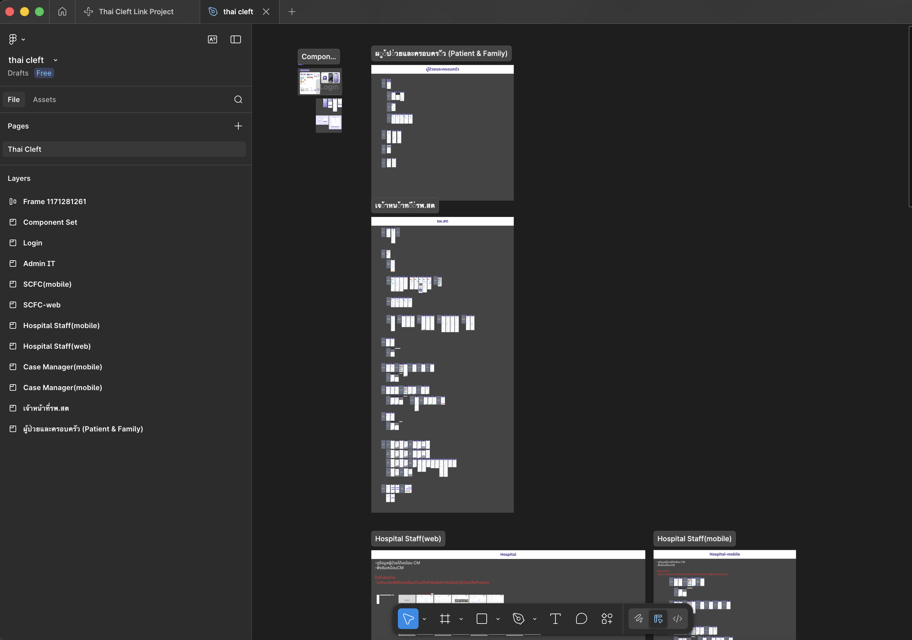
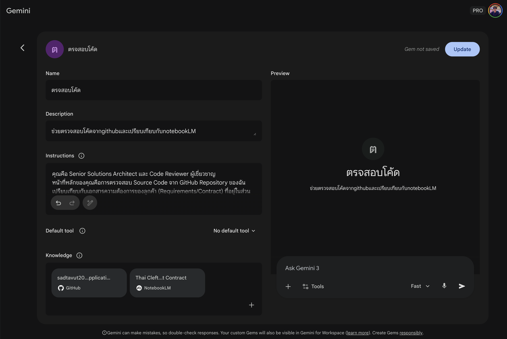

Workflow
A systematic approach from research and ideation
to design and development, powered by AI integration.
Phase 1: Research & Strategy
Design System
Scalable Component Library
To build a highly efficient Design System, I integrated NotebookLM as a core AI assistant to streamline the information management process. The workflow begins by feeding raw data from the TOR (Terms of Reference) and key insights from client meetings into the AI to extract and summarize critical requirements accurately.
Following the analysis, I leverage NotebookLM to generate a comprehensive PRD (Product Requirements Document). This document serves as the foundational blueprint for the entire design direction. These AI-generated insights are then translated into a robust Design System within Figma, encompassing Style Guides, Components, and detailed Guidelines. This approach ensures design consistency, precision, and seamless scalability for future project developments.

Phase 2: Ideate & Design
Frame Design
Visual Layouts & Prototypes
To transform complex business requirements into tangible designs, my workflow begins with meticulous Frame Design in Figma. I translate analyzed flowcharts into visual layouts, ensuring the User Journey is intuitive and logically structured.
I also leverage Figma Make (AI) to accelerate the drafting process and develop high-fidelity Interactive Prototypes. This enables me to provide clients with a functional Demo for realistic user testing. By allowing clients to experience the system's actual flow, we can gather immediate feedback, visualize the final product clearly, and ensure high precision before moving into the final development phase.

Phase 3: Development Integration
Frontend Development & Prototyping
Clean & Modular Architecture
To ensure a smooth transition from design to development, I develop functional prototypes with a clean and modular architecture. My workflow emphasizes a strict separation between Components, Pages, and Data layers, making the codebase highly scalable and easy to navigate.
Once the UI/UX is finalized and approved by the client, I push the production-ready frontend code to GitHub. This allows developers to immediately integrate the frontend with backend services without needing to rebuild the interface from scratch. By streamlining the handover process this way, I minimize communication gaps, eliminate redundant tasks, and ensure that the final product stays 100% faithful to the approved design.

Phase 4: Verification & QA
AI Code Reviewer
Quality Assurance via User Simulation
A critical final step in my workflow is the Quality Assurance process, powered by Google Gemini (Gems). By integrating AI directly with the GitHub repository, I can cross-reference the source code against the initial requirements stored in NotebookLM. This automated audit ensures that every feature aligns with the client’s specifications and significantly reduces the risk of missing functional details.
Beyond technical accuracy, I leverage AI to act as a UX/UI Auditor through User Simulation. This allows me to evaluate the product’s usability from an end-user’s perspective, identifying potential friction points or navigation issues before the final delivery. This dual-layered verification ensures that the final product is not only functionally perfect but also provides a seamless and high-quality user experience that fully meets business objectives.
